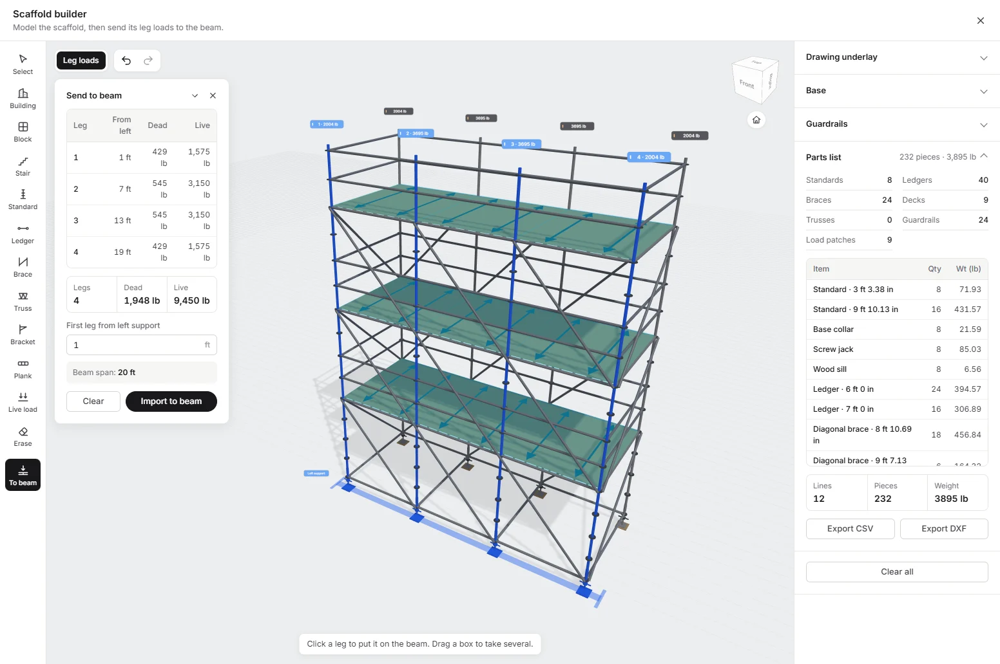
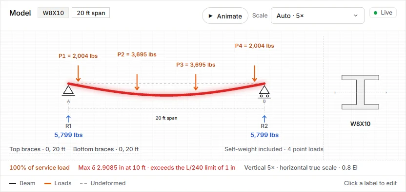
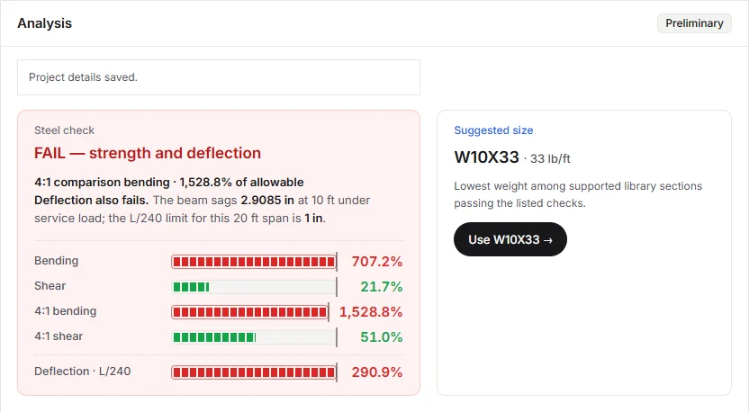
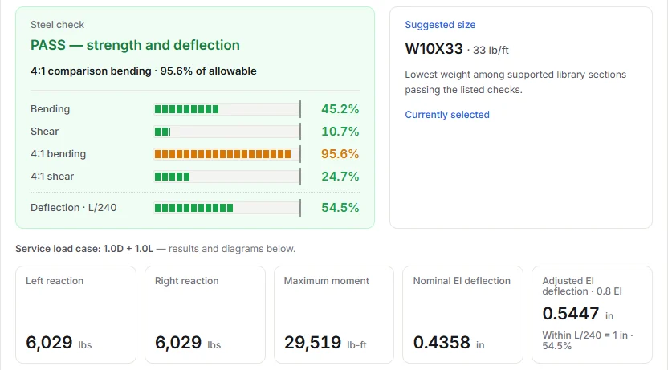
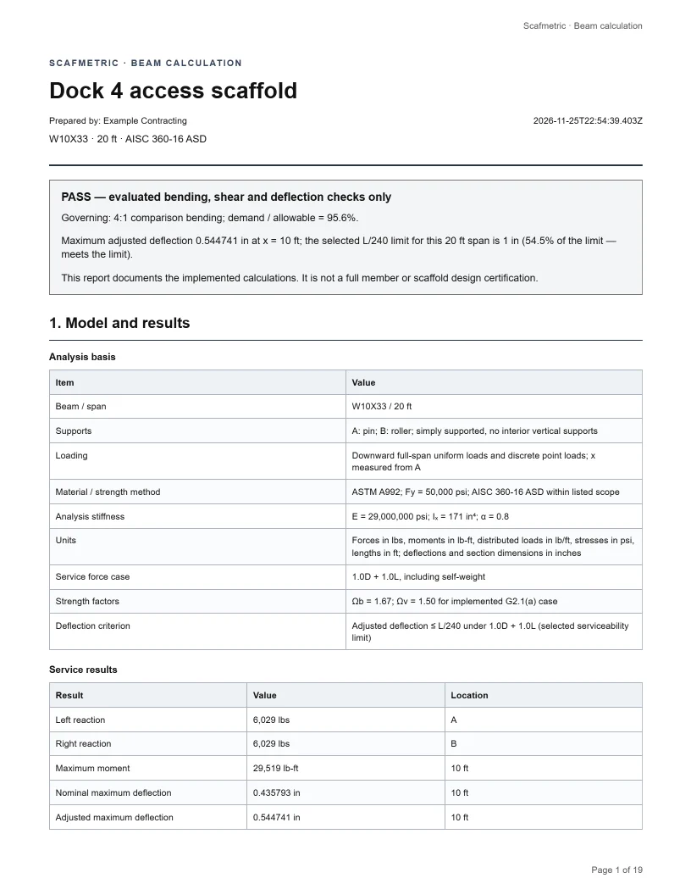

The common guess
A W8X10 is in every yard and in every estimator's head. It goes into the bid because it is familiar, not because anyone checked it.
BID CHECK ENGINE: READY · AISC 360-16 ASD · 00:00:00
Sign inBids cannot wait for a full analysis. Scafmetric gets your beam size close at bid time, so the number you carried is not a shock when the engineer's answer arrives.
SCAFFOLD → LEG LOADS → BEAM → CHECK → RECORD
Example: 20 ft span, four 4,500 lb legs, no bracing between supports. Numbers from Scafmetric's own checks.
You price the job this week. The stamped analysis comes weeks later. Whatever beam you carried in between is a guess, and a bad guess is paid for twice: once in steel, once in schedule.
A W8X10 is in every yard and in every estimator's head. It goes into the bid because it is familiar, not because anyone checked it.
Then the analysis comes back calling for something three or four sizes deeper. A W8 was carried where the job needed a W24. The steel, the lift and the lead time were never in the price.
Scafmetric runs the bending, shear and deflection on your span and your loads in minutes. You carry a size in the right range, with the calcs to back it up.
It does not replace the engineer. It gets you near the answer early, so the engineering confirms your number in place of overturning it.
Four steps, all at bid time, with nothing to install.
Lay the scaffold out in the builder and it figures out what each leg carries. Or enter your own point loads and uniform loads on the beam.
Pick the legs that sit on the beam. Their loads carry over as point loads at the right distances, with dead and live kept separate.
See reactions, shear, moment and deflection for the size you had in mind, with selected AISC 360-16 ASD bending and shear checks. Or ask for the lightest size that passes.
Print the result and the assumptions behind it. When the engineering comes back, you can see where it differs from your number, and why.
One example job, from the scaffold to the record. Select an image to open it larger.

01 // SCAFFOLD AND LEG LOADS
02 // LOADS ON THE BEAM
03 // THE GUESS, CHECKED
04 // THE SIZE THAT HOLDS
05 // CALCULATION RECORDExample inputs shown: a three-bay scaffold with 50 psf on each of three decks, its four front legs on a 20 ft beam.
Enough to carry a reasonable size in a bid. Not a member design.
Section properties are from a mirrored AISC v15 shapes database. Verify against the official source before use.
I'm Antonio Monroy. I'm a structural engineer, and I work in the scaffold industry.
Bids don't wait for engineering. I've seen jobs priced on a beam somebody guessed. Then the real analysis comes back, the beam is a lot heavier, and the bid is already out the door.
So I built Scafmetric. You can check the beam yourself before the bid goes in. It takes a few minutes, and it shows you the math. It won't replace your engineer. It'll get you close, so the engineering isn't a surprise when it comes back.
Antonio MonroyFounder, Scafmetric
Contractors, estimators and project managers who have to price a beam under a scaffold or shoring before a full analysis exists.
It runs the same bending, shear and deflection a first-pass check would on the span and loads you give it. How close that is to the final design depends on what the full analysis adds: bearing, connections, bracing design and anything specific to the scaffold.
No. It is for preliminary bid planning. It is not a complete member design, an engineering certification or a construction approval.
A simply supported beam with full-span uniform dead and live loads and downward point loads. Beam self-weight is added for you. The scaffold builder can figure out the leg loads and send them over.
Create a Scafmetric account or sign in to open your workspace.
Check the beam in your estimate before the bid goes in.
Sign in or create an account